Silent Hill 4 and Japanese Ghost Stories
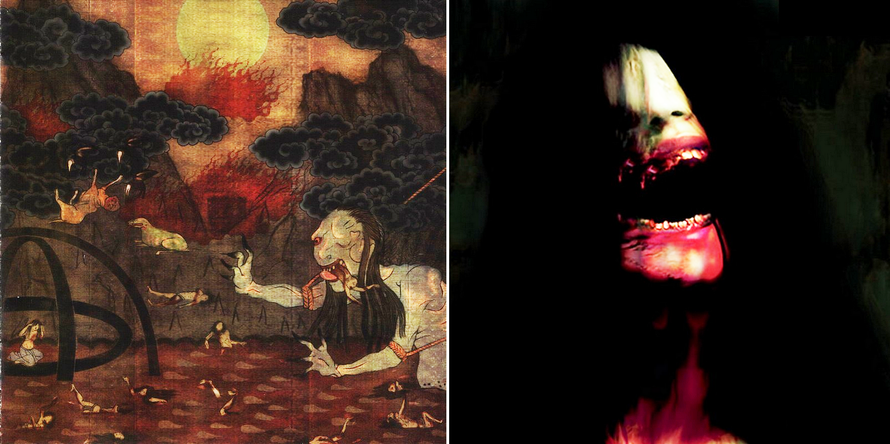
The Connection Between Old Japanese Ghost Stories, Urban Legends, and SH4
This is a mirror of the DeviantArt version linked above, provided as a backup and for easier access.

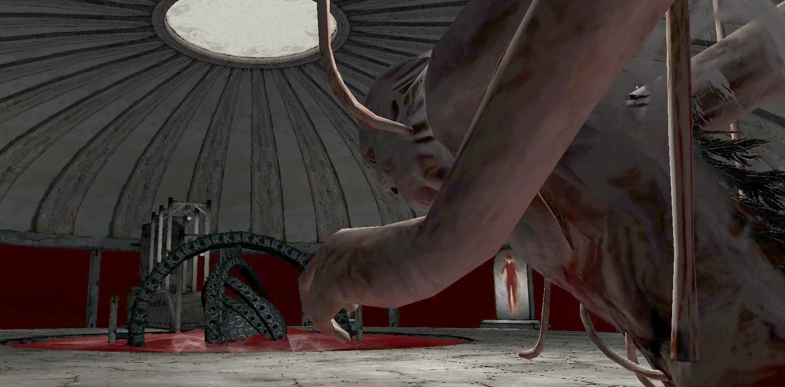
The first Japanese edition of SH4 came with a ghost story written by a "Living National Treasure." On top of that, the soundtrack had packaging designed in the style of Japanese ghost prints. Even though the setting of the game is in the U.S., it had so many Japanese horror elements that I remember being genuinely scared back then, haha.
So, this time, let's talk about the Japanese horror elements in SH4.
✅ Ghost-Print Style Artwork
I once read that Tsuboyama-san said this artwork on the soundtrack depicted the final scene in the style of a "(Buddhist) hell scroll," but I'll add a little extra on my own.
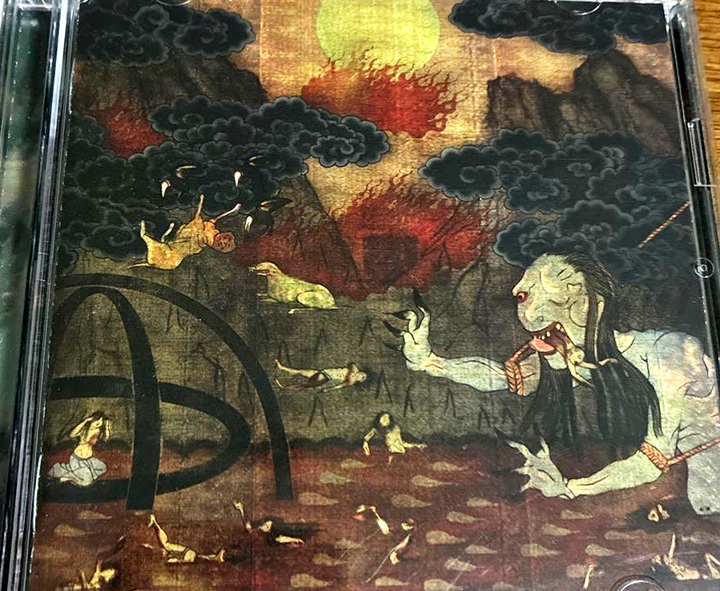
This design is in the style of ukiyo-e ghost prints. Personally, I think it's drawn in a style similar to Utagawa Kuniyoshi.
Utagawa Kuniyoshi's Oiwa-san (reproduction from my own collection)
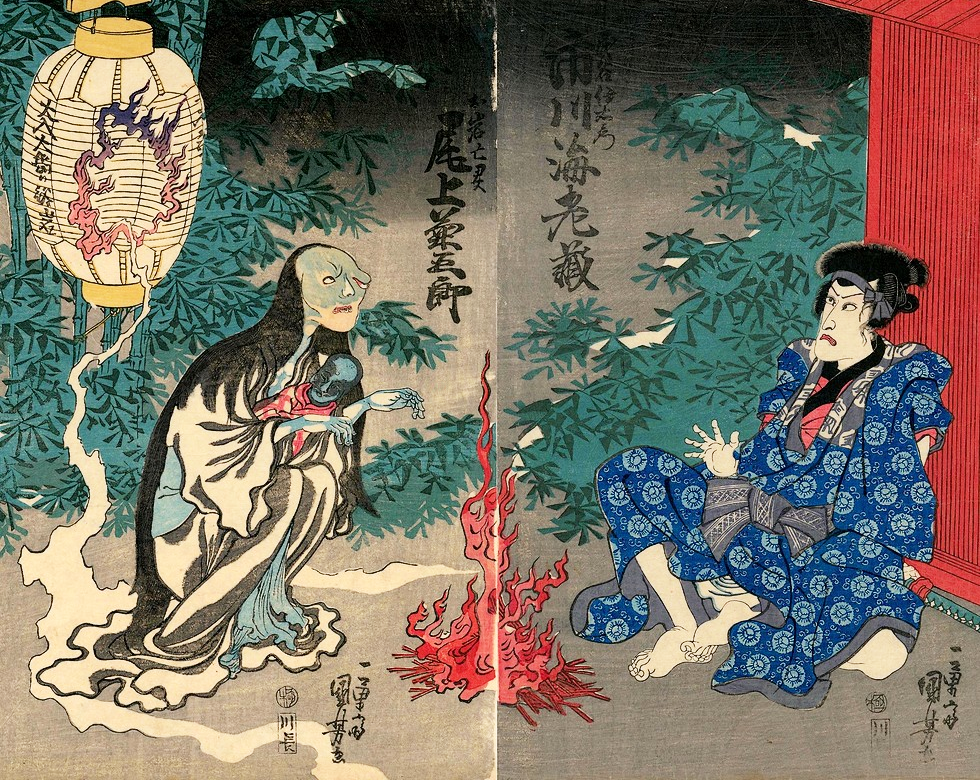
Ukiyo-e are Japanese paintings from the Edo period, and their distinctive feature is stylization. There are many genres: from landscapes, depictions of popular events of the time, portraits of Edo beauties, famous actors, to erotic art called shunga.
Exhibit at Mitsukoshi department store (reproduction print, photo taken by me)
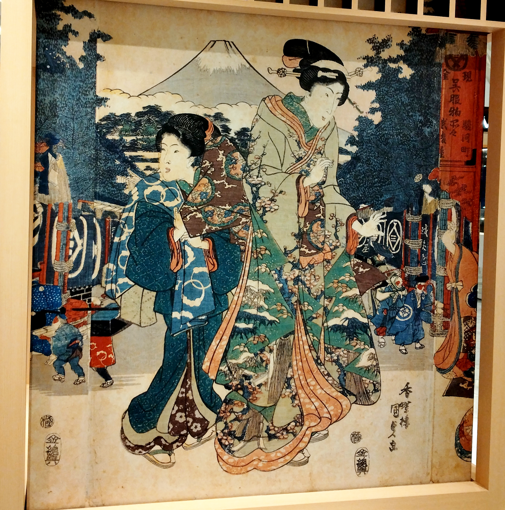
Another genre is "ghost prints," based on ghost stories. They were popular, and many artists drew various ghost tales as motifs.
Some ghost (spirit)-themed artworks were hanging scrolls rather than prints. There's a perfect explanation in the "Ghostwire: Tokyo" database. So I borrowed it for reference. The period and how they became popular are roughly the same for both.
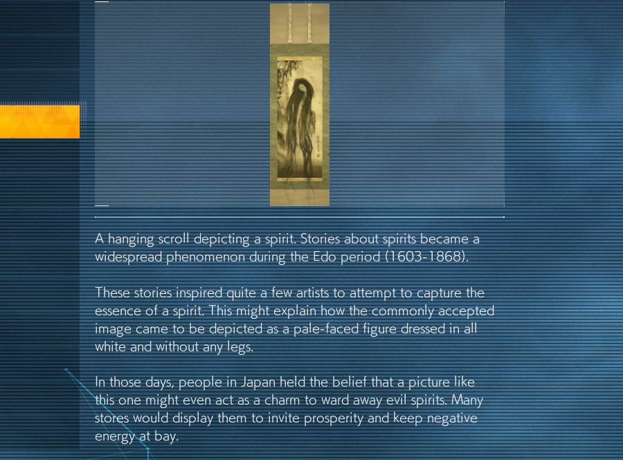
On a side note, the director of SH4, Murakoshi-san, also worked on the game. So when Room 302 appeared, I got a little excited. But Henry wasn't there. Of course not! Still, "Kirigaoka" means "Fog Hill" in Japanese, so it's probably meant as a reference to Silent Hill!
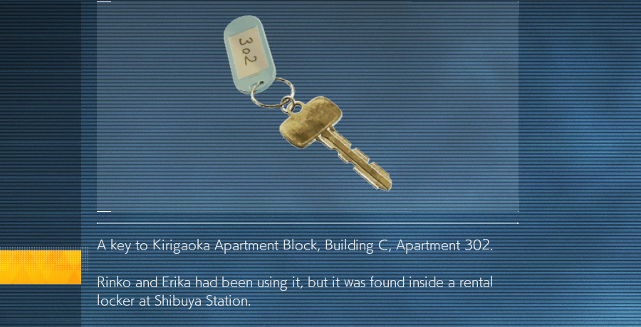
And yes, there was even that "collect the blue stones..."ending. Complete with music, just like in SH3!
✅ Oiwa-san
Next, let's talk about the characters depicted in the artwork.
Among ghost-print motifs, Oiwa-san was very popular. She appears in "Yotsuya Kaidan," Japan's most famous ghost story. This story has been adapted into movies and dramas many times, with various versions.
The main plot: a husband wants to leave his wife Oiwa for a wealthy woman, so he poisons Oiwa. She loses her hair and one eye rots. Consumed by a deep grudge, she dies cursing him and returns as a vengeful ghost to exact her revenge.
The image of long hair and a rotten eye is so widely known that most Japanese people immediately recognize it as Oiwa-san. It's kind of like how someone wearing a hockey mask and holding an axe is instantly associated with Jason from "Friday the 13th."
So even works that don't depict Yotsuya Kaidan directly often use this "Oiwa-style" ghost as homage.
The character on the soundtrack, probably that guy (True Walter), with long hair and a rotten eye, seems to be a direct nod to Oiwa-san.
Interestingly, modern horror characters like Sadako from "The Ring," who hides one eye behind long hair, are also said to be Oiwa-san homages.
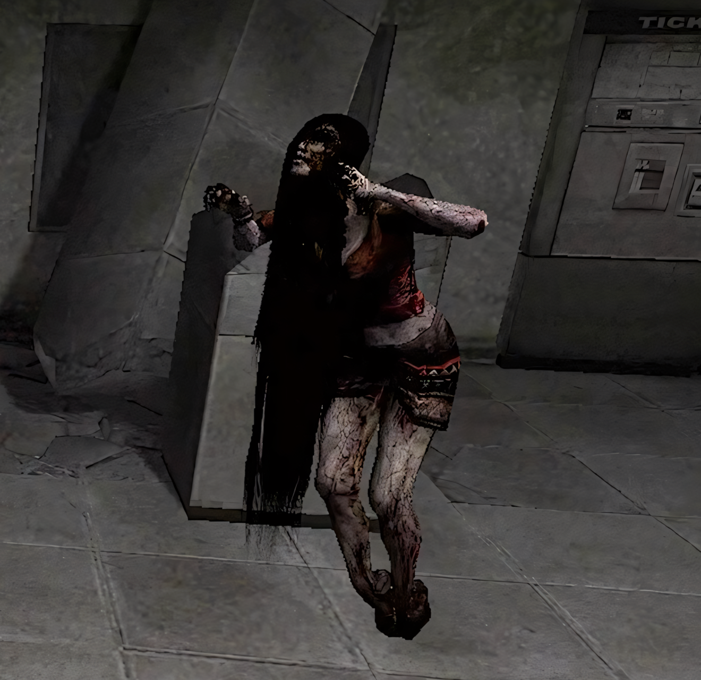
The ghost Cynthia (Victim 16) in SH4 could be seen as an homage to Sadako, meaning the game references both Oiwa-san herself and works inspired by her.
Oiwa-san is that iconic. Even today, it is a well-known tradition for actors to visit her grave to pay their respects and seek protection before performing the play, fearing her legendary curse.
For context, though, she was a fictional creation, the real-life Oiwa-san, according to descendants, lived happily with her husband
✅ The Hot Hells (Buddhist Purgatory)
This is the artwork on the back of the package, which is likely drawn in the 12th-century "Yamato-e" style of the "Hell Scroll" (Jigoku Zoshi) and is much older than Ukiyo-e.
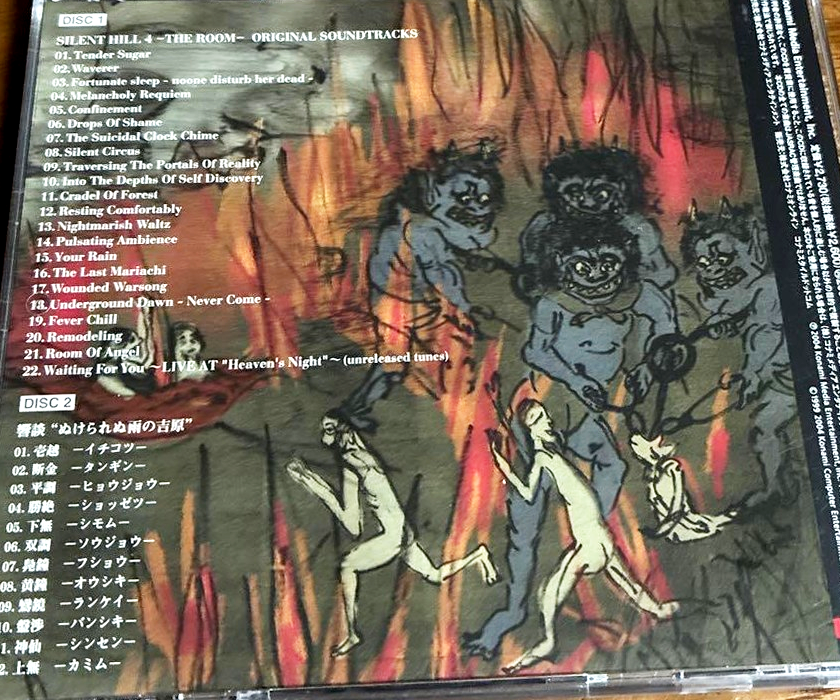
Rokudō-e on Hell Scroll at the Nara National Museum (reproduction from my own collection)
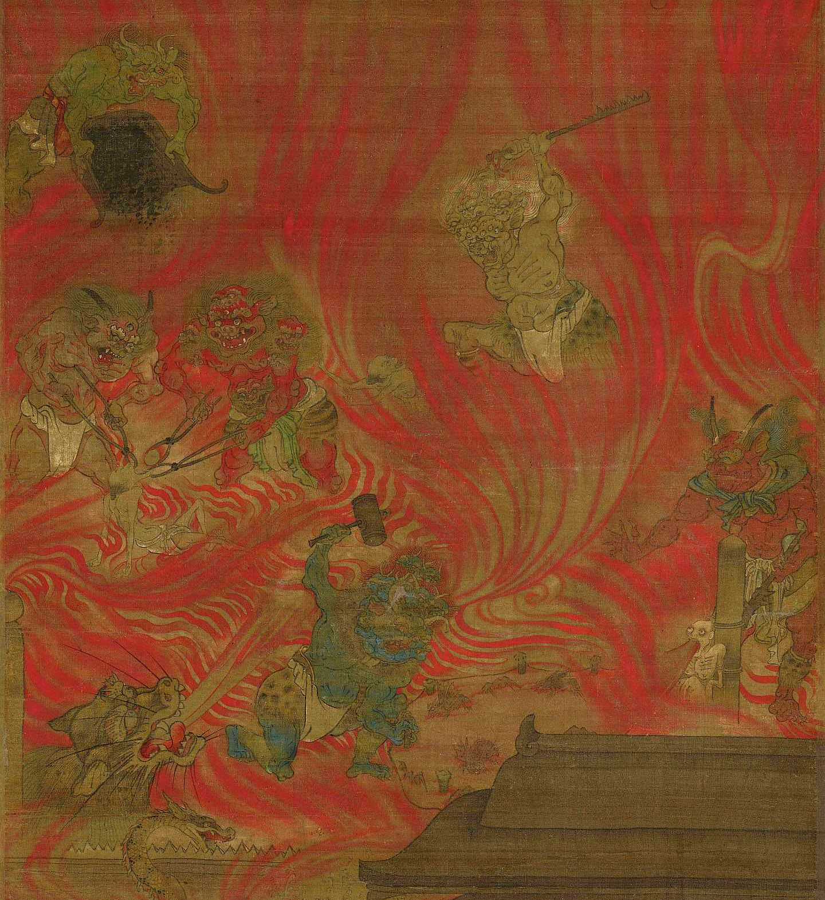
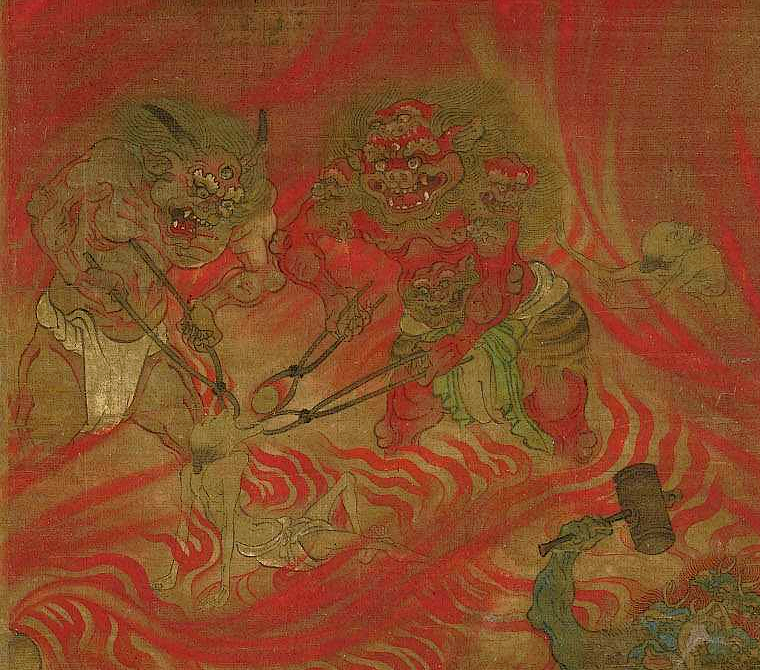
The image in the middle left depicts demons prying open a human's mouth with tools. This is modeled after a punishment in the "Avici Hell" from the Hell Scroll, where they force you to swallow red-hot iron balls. Yikes!
This isn't strictly a ghost story, but it's still definitely a scary one.
When it comes to variations of these hellish pliers, there's also the famous one where Lord Enma pulls out your tongue. It's a classic line Japanese parents use to scold their children, "If you lie, Lord Enma will pull your tongue out!" It's something that used to terrify us as kids, haha.
The cover art also looks like the tongue is being pulled out, so this story might be mixed in as well. Either way, it’s creepy!
✅ Miminashi Hōichi
There's a famous Japanese ghost story called Miminashi Hōichi (Hoichi the Earless).
One day, Hoichi, a blind biwa player, began to grow weak. A suspicious priest follows him and discovers that he has been playing in a graveyard, possessed by ghosts. To protect him, the priest writes sutras all over Hoichi's body, but forgets his ears. The ghosts, seeing only the exposed ears, tear them off. But Hoichi himself survived, even though his ears were bleeding.
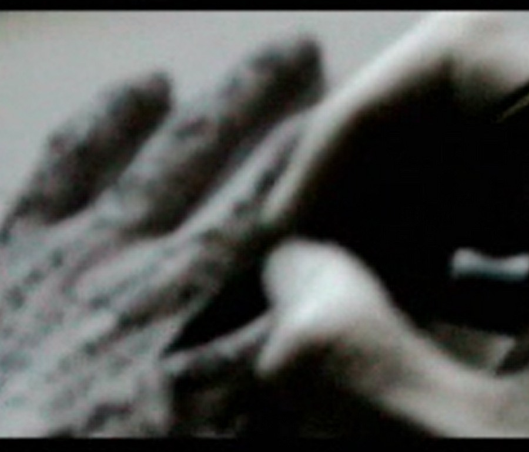
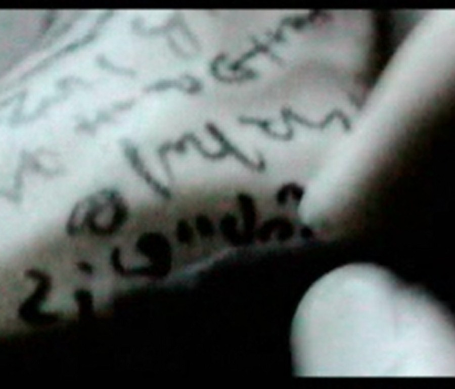
In SH4's PV, Joseph (maybe) writes on his hand—likely recreating this old tale. But I guess it didn't work on Western ghosts…
✅ Anata no Shiranai Sekai (The World You Don't Know)
I mentioned this on another page, but Murakoshi-san mentioned it on the old SH4 official page, "あなたの○○○い世界 (Your XXX World)" is a redacted version of the title of a former Japanese ghost story program, "あなたの知らない世界 (The World You Don't Know)."
🌐制作者の声「第2回:部屋の恐怖」SILENT HILL4 THE ROOM ディレクター兼シナリオ担当 村越卓
From Konami SILENT HILL 4 THE ROOM, Developer's Voice" Vol. 2: "The Terror of the Room" Director and Scenario: Suguru Murakoshi
https://web.archive.org/web/20071207104611/http://www.konami.jp/gs/game/sh4/02roomq.html
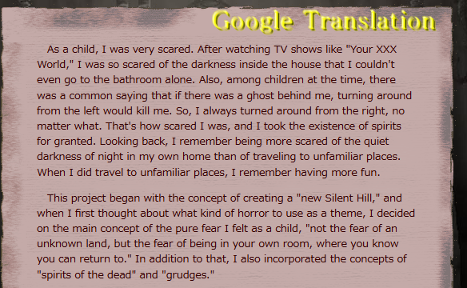
It was a series mainly broadcast during summer vacation. The program itself ended in 1997, but it was later aired several times as a one-off special. Even young Japanese people don't know about it.
Because Obon, when ancestors are said to return, falls in the summer, the horror season in Japan is summer, not Halloween. Also, kids are on summer vacation and school is closed, so they were the main audience. It was a live-action drama in the form of "reenactment videos based on viewer submissions," and because it was a reenactment, kids wondered, "Is this a true story?" which apparently terrified them.
✅ Kuchisake-Onna
The story he's talking about, where "you get killed if you look back over your left shoulder," I've heard as part of the Kuchisake-onna legend. While it's a modern urban legend, its roots apparently go back to the Edo period.
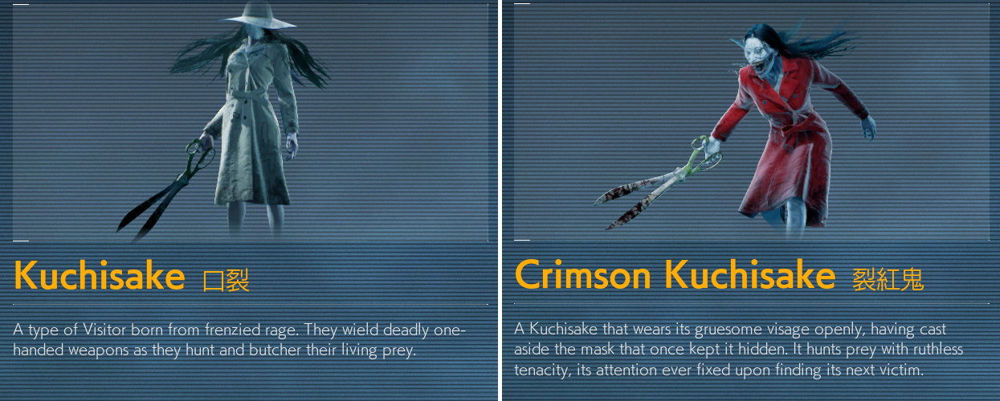
Her appearance in urban legends is almost identical to how she appears in "Ghostwire: Tokyo." She has long hair, hides her mouth with a mask, and carries a pair of scissors. When she removes the mask, a large slit mouth and jagged teeth are revealed.
And I managed to get a screenshot. It's way too scary…
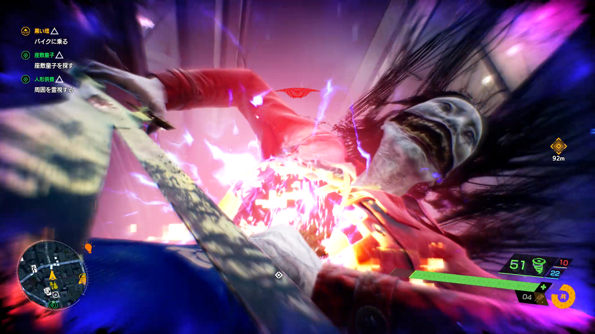
It kind of looks similar, right?
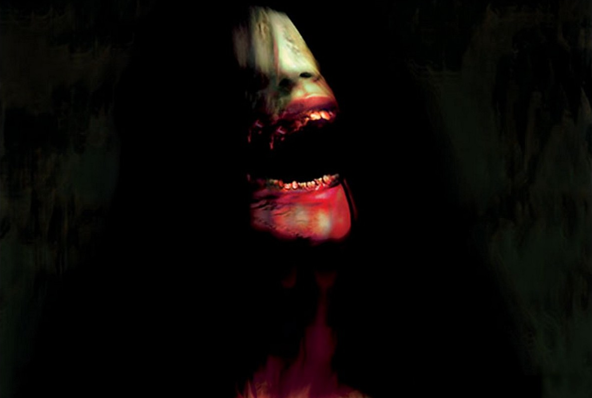
I feel like the ghost Cynthia from SH4 has elements of not only Sadako (Oiwa-san) but also the Kuchisake-onna.
In this way, even though SH4 is set in the U.S., it's packed with many elements of Japanese horror, from old ghost stories to modern urban legends. I think it's this blend that adds a kind of eeriness you don't usually find in Western stories.